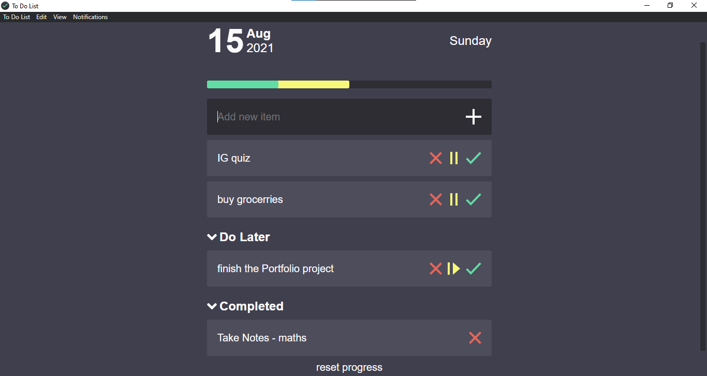

To Do List
a meter-based to-do list for your desktop
download for windows
If the download doesn't work, try downloading from
Here

Features:
Positive reinforcement:
as you complete tasks, the progress meter fills.
Paused items:
feel free to put off things (again).
Out of sight, out of mind:
when you complete something, you don't have to think about it again.